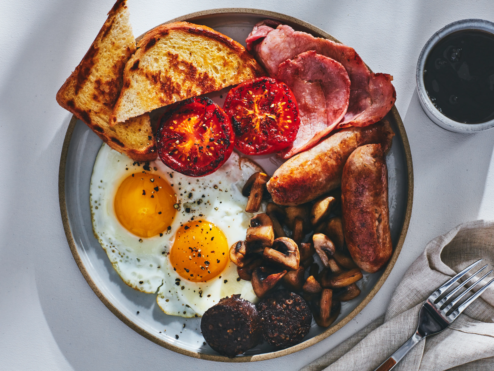
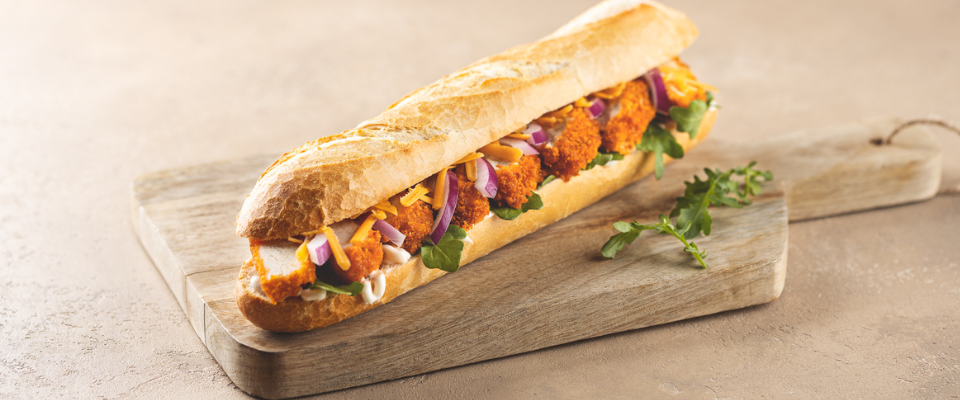

Irish Stew
This is an Irish delicacy, which Irish people eat often. it is very simple to make consisting of water, gravy, potatoes, beef and carrots.
Bangers and Mash
People in Ireland love bangers and mash as it is made with mashed potatoes which is a very common ingredient in Irish meals.

Full Irish Breakfast
A full Irish Breakfast is a weekly essential in Ireland. It typically consists of bacon, sausages, eggs, black and white pudding, hash browns and potato bread.

Chicken Fillet Roll
This sandwich is a popular Irish lunch, mainly made in deli's in shops around Ireland. The most popular toppings are cheese, lettuce and curry sauce.
Spice Bag
A spice bag is a delicious meal served in Chinese Takeaways in Ireland. It is topped off with spice flakes and curry sauce.